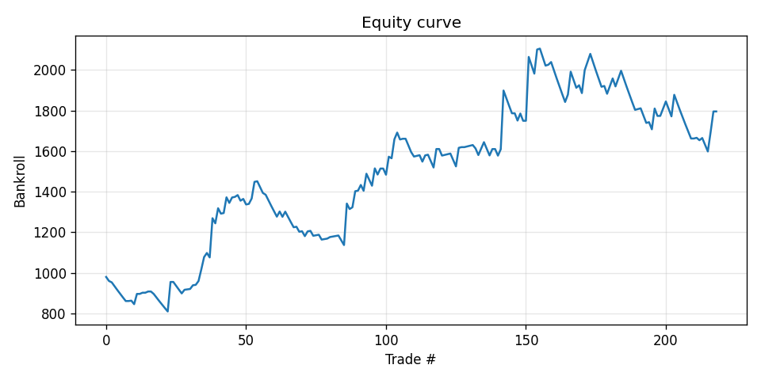
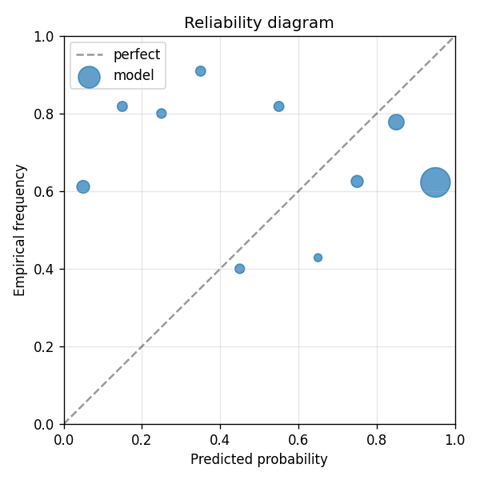

Flagship PoC Model A baseline. 145 mid/small-cap retail-narrative tickers × ~10 years (2014-2024) → expected ~5,000-8,000 events. Pure numerical features: Per (ticker, earnings_date): - EPS estimate, prior-4q surprise avg, prior-4q beat rate, days since last earnings - Realized vol 30d + 5d, trailing returns 7/30/60/90/180d, sector ETF returns - IV-rank proxy (current 30d vol percentile vs trailing year) - Volume shock (recent 5d vol / 60d baseline) - Momentum diff (7d vs 90d return) - Reddit + StockTwits aggregates (mention count, comment count, bullish/bearish ratio) Model: GBDT. Held-out: last 18 months (~600-1000 events). Compare to earnings-flagship-B (same data + Voyage-embedded SEC + transcripts + news text). The A-vs-B Brier improvement at this scale is the actual flagship test of the agent-army + text-feature thesis.
| metric | value |
|---|---|
| brier_model | 0.35109697220084424 |
| brier_market | 0.21981100963977676 |
| brier_improvement | -0.13128596256106748 |
| accuracy_model | 0.5570776255707762 |
| accuracy_market | 0.680365296803653 |
| n_events | 219 |
| n_trades | 204 |
| hit_rate | 0.4803921568627451 |
| gross_return | 0.7958532794428621 |
| net_return | 0.7958532794428621 |
| sharpe | 1.049911602970012 |
| max_drawdown | -0.24077884818014741 |
| label_shuffle_brier_improvement | null |

